Как Transformer моделите промениха света на Изкуственият интелект
Какво е Transformer?
Когато думата „Transformer“ (Трансформър) се спомене в контекста на изкуствения интелект (ИИ / AI), обикновено става въпрос за семейство архитектури на изкуствени невронни мрежи (ИНМ / ANN), базирани на механизма multi-head attention. Този механизъм позволява на моделите да анализират големи обеми от данни и да изчисляват паралелно връзките между всички елементи в тях. Предходните поколения архитектури, като рекурентните невронни мрежи (RNN), не могат да обработват толкова много информация едновременно и се затрудняват при надеждния анализ на дългосрочните зависимости в данните (Vaswani et al., 2017).
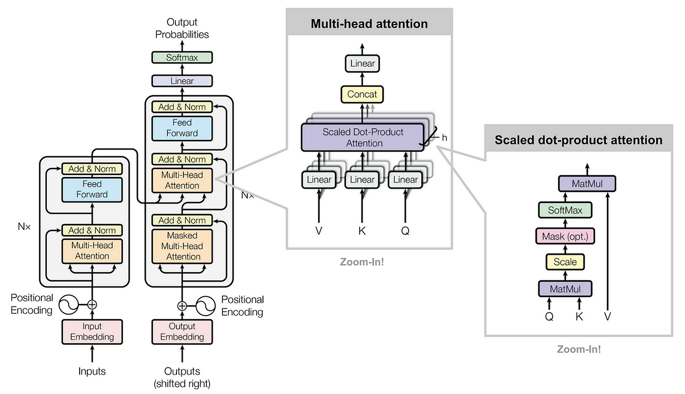
Архитектура на Transformer моделитеПървоначално Transformer моделите са създадени за работа предимно с текстови данни, като еволюция на RNN моделите в машинния превод. Днес обаче те намират приложение в почти всяка сфера на машинното обучение – от компютърното зрение и разпознаването на реч до автономните автомобили и много други.
Благодарение на способността си да улавят далечни контекстуални връзки, тези модели могат да бъдат универсални. Именно това ги прави най-широко използваните архитектури в съвременния изкуствен интелект. След разпространението на тези модели, светът на ИИ и реалният свят се промениха по следните начини:
- Чатботове и други интелигентни асистенти станаха част от ежедневието ни
- Търсачките станаха по-интуитивни за използване
- Машинният превод стана по-надежден
- Научните и медицинските изследвания значително се ускориха
- Много автономни, доскоро немислими системи, като самоуправляващите се автомобили, се превърнаха в реалност
Казано по-просто: преди Transformer моделите изкуственият интелект беше тясно специализиран – създаден да изпълнява една или няколко конкретни задачи, при това не винаги безупречно. Днес ИИ, базиран на Transformer архитектурата, е много по-близо до технология с общо предназначение и демонстрира значително по-висока надеждност.
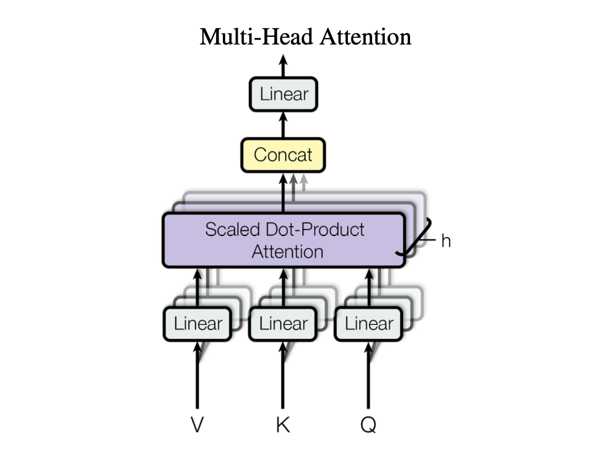
Интерактивна визуализация на Transformer архитектурата
Vision Transformers и Convolutional Neural Networks
Конволюционните невронни мрежи (КНН / CNN) първоначално са създадени за задачи, свързани с изображения, като разпознаване на изображения. CNN работят на базата на математически конволюционни операции. Тези операции осигуряват „зрение“ на CNN, но това зрение е по своята същност ограничено.
Локалността на CNN
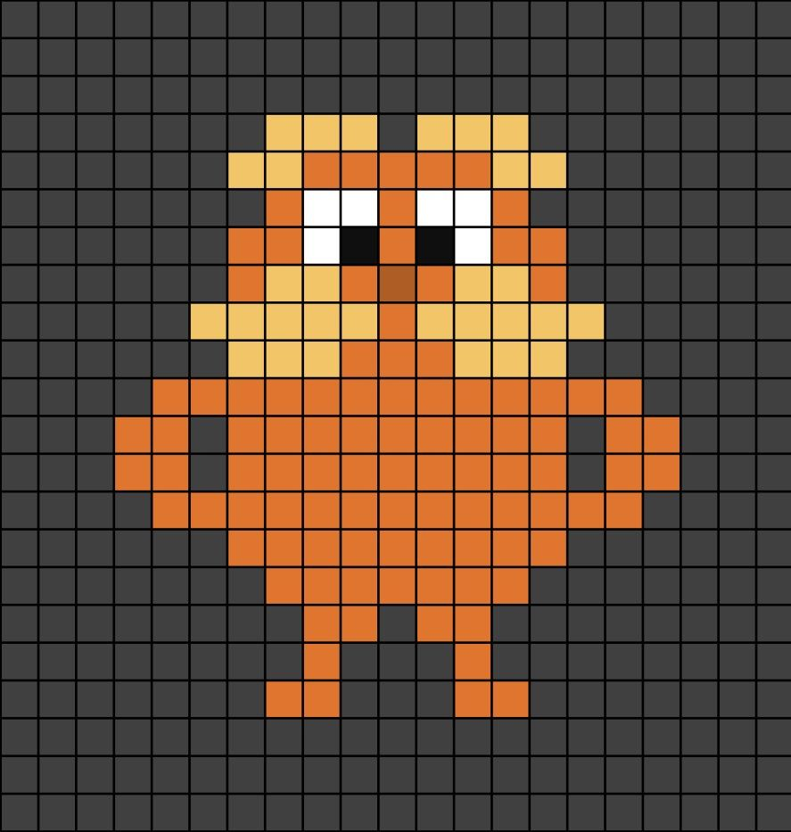
Вижте това изображение. Като хора, стига да имаме добро зрение, ние веднага разпознаваме обекта (в този случай, героят Лоракс), защото можем да видим цялото изображение наведнъж.
Конволюционните невронни мрежи (CNN) обаче не могат да „видят“ цялото изображение едновременно.
Един слой на CNN обработва изображения по следния начин: Той сканира дадено изображение пиксел по пиксел, отгоре надолу и отляво надясно. Около всеки пиксел сканира предварително определена област, например 1 пиксел. По този начин, в даден момент, той може да „вижда“ само мрежа от 3x3 пиксела (например). Тази мрежа от 3x3 пиксела се нарича ядро (kernel).
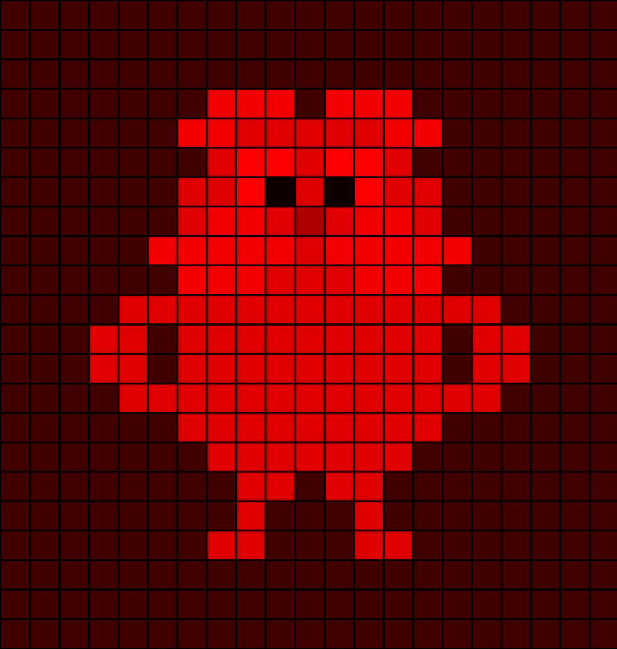
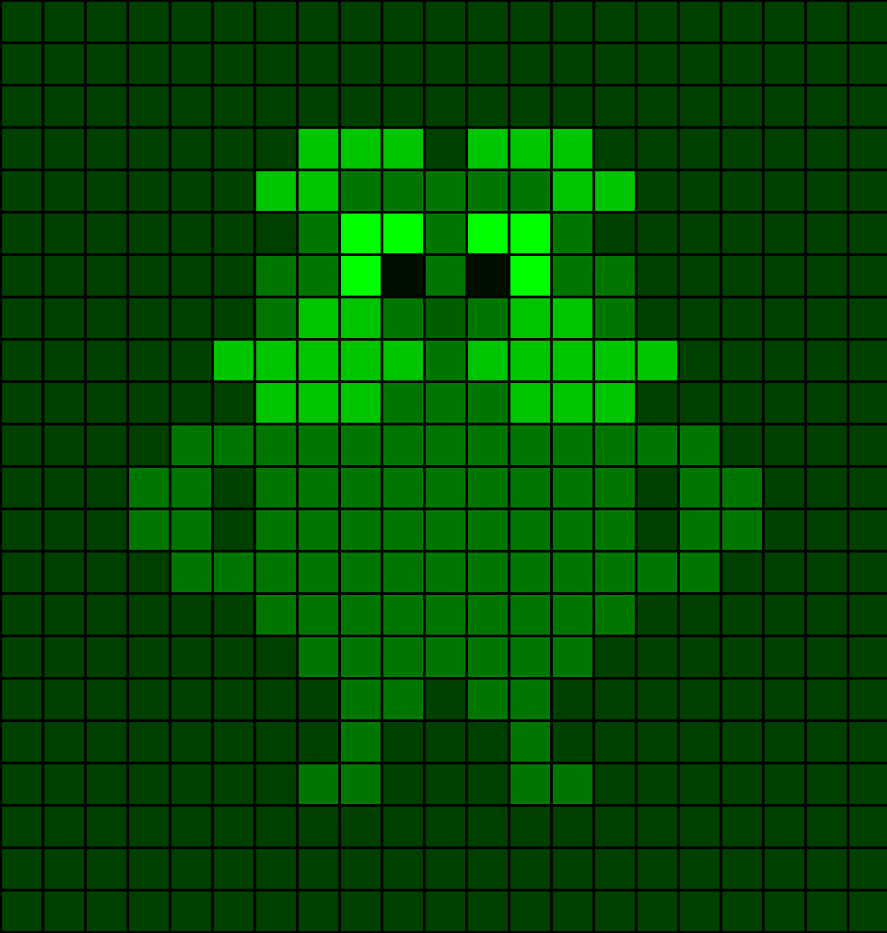
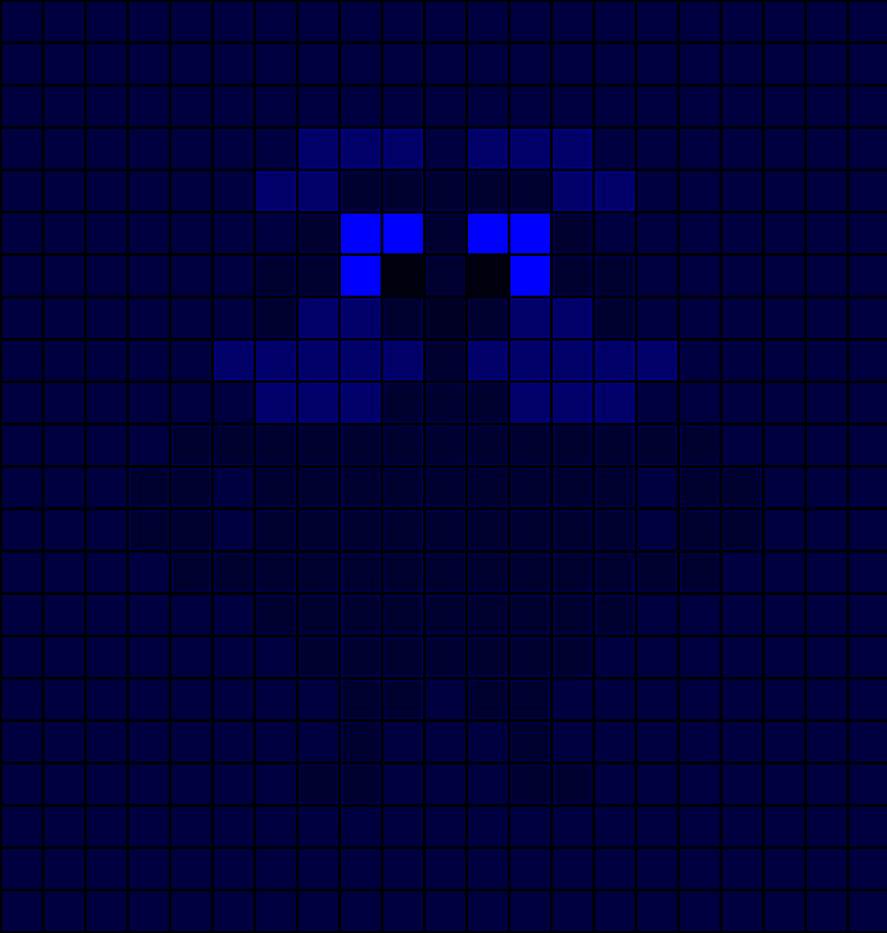
Цветните изображения се състоят от три монохромни слоя: червен слой, зелен слой и син слой.
CNN Ядро - Интерактивна визуализация
Чрез прилагане на това сканиране пиксел по пиксел върху всичките три монохромни слоя и анализиране на връзките между всяко сканирано ядро, CNN може да създаде изображение наречено 2D карта на характеристиките (2D feature map). Една CNN се състои от множество такива слоеве, чиито ядра търсят различни свойства. Чрез натрупването на тези слоеве мрежата се опитва да „сглоби“ какво точно вижда. Този локален подход обаче е ограничен. Аналогията е сякаш се опитвате да разберете какво е изобразено на голям пъзел, като гледате само три свързани парчета от него. В зависимост от сложността на изображението, това може да бъде изключително трудно или напълно невъзможно.
Това ограничение води до сериозен страничен ефект. Изкуственият интелект, базиран на CNN, ще бъде по-силно повлиян от цвета, отколкото от формата на обекта в изображението. CNN би класифицирал лявото изображение като папагал и дясното като котка. Двете изображения всъщност са почти еднакви, първото изображение просто е с по-висока цветова наситеност. (Turc, 2025)
Има техники за смекчаване на този страничен ефект, но той не може да бъде напълно отстранен.
CNN Конволюционни слоеве - Интерактивна 3D визуализация
Как би постъпил Vision Transformer?
CNN моделите могат да анализират само малки области от изображението и следователно разбират основно връзките между съседни пиксели. Благодарение на механизмите за self-attention, Vision Transformer моделите (ViT) могат да анализират цялото изображение наведнъж. Това означава, че те могат да разберат всички връзки между всички пиксели. Трансформър модел би „сканирал“ изображението пиксел по пиксел (текущият сканиран пиксел при ViT се нарича query pixel), но вместо да разглежда локална област (3x3, 4x4, 5x5 и т.н.) около всеки пиксел, той разглежда цялото изображение около всеки пиксел. По същество, той анализира цялото изображение толкова пъти, колкото пиксела има в него. Модела “картографира” връзките на всеки пиксел с всички останали пиксели в изображението.
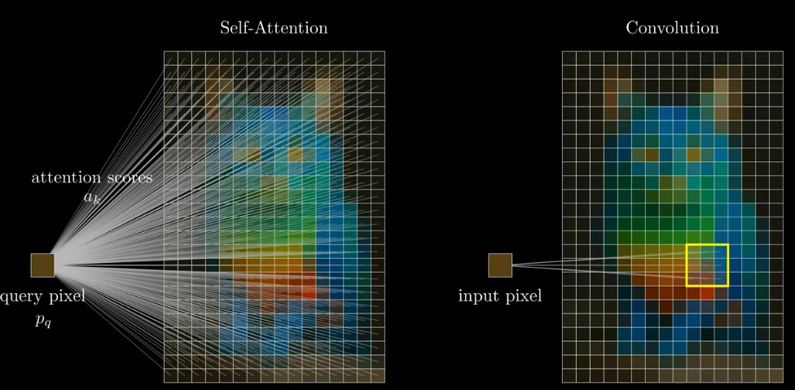
Transformer моделите могат да извършват конволюционни операции
Като се има предвид горното - принципът между двата вида анализ е почти еднакъв. Vision Transformer моделите просто правят това, което правят CNN, но по-добре, тъй като вземат предвид повече зависимости между пикселите. Следователно Vision Transformer моделите могат да правят всичко, което могат и CNN. Ето защо почти няма причини да се използват CNN.
* CNN се предпочитат за: Edge devices; Системи за работа в реално време; Работа с по-малки набори от данни; Нужда от по-ниска изчислителна сложност
Производителност
CNN позволяват паралелни (parallel) изчисления в рамките на всеки слой, но все пак обработват данните последователно (serial) през слоевете. Transformer моделите, за разлика от тях, позволяват паралелна обработка не само в рамките на слоевете, но и върху всички входни елементи чрез механизма за self-attention, което ги прави особено ефективни за моделиране на последователности. Затова Transformer моделите са по-бързи от моделите, базирани на CNN.
Съпоставка между CNN и Vision Transformers
Ето сравнителна таблица между свойствата на CNN и Vision Transformers, базирана на (Papastratis, 2023)
| Свойство | CNN | Vision Transformer |
|---|---|---|
| Скорост | Бавна (последователна обработка на слоевете) | Бърза (паралелна обработка) |
| Контекст | Ограничен | Голям |
| Сложност на слой | Сложен | По-прост |
| Обучение | Изискват големи количества анотирани данни за обучение | Могат да се обучават и с неанотирани данни |
* В рамките на контекстния прозорец (context window).
Transformers и Recurrent Neural Networks
Transformer моделът е създаден като следваща стъпка спрямо вече съществуващите RNN. Най-важната характеристика на Transformer модела е неговият self-attention механизъм. Този механизъм позволява на Transformer моделите (които обработват данните паралелно) да бъдат по-ефективни от RNN моделите (които обработват данните последователно) и им дава възможност да откриват надеждно далечни връзки между данните. Паралелната обработка позволява на Transformer моделите да „анализират и запомнят“ целия набор от данни (dataset) (в рамките на контекстния прозорец), без да е необходимо да се връщат назад, за да проверяват информация повторно. RNN, които обработват данните последователно, не могат да „запомнят“ толкова много информация наведнъж и поради това не се справят добре с големи обеми от данни. (Stryker & Bergmann, n.d.)
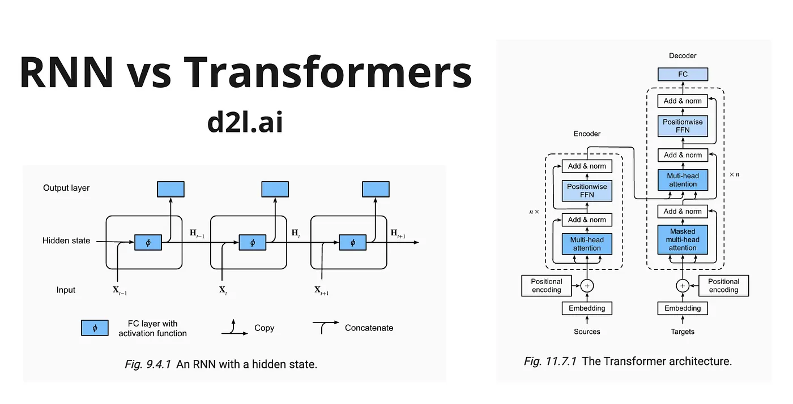
Как работят RNN?
Идеята зад RNN е проста: за да предскажем следващата дума в едно изречение, трябва да знаем предишните думи. Ако подадем на RNN изречението „London is the capital …“, резултатът ще бъде „… capital of the United Kingdom“. (Shchegrikovich, 2024)
RNN Слоеве - Интерактивна визуализация
Ето какви са недостатъците на RNN моделът:
Важността на думите е определена от самият модел, а не от техният контекст. Моделът сканира изречението линейно. „London“ винаги ще бъде първата прочетена дума и следователно най-слабо запомнената дума. Това може да доведе до нелогично определена важност на думата в изречението, понеже връзката между думата и контекста може да бъде забравена.
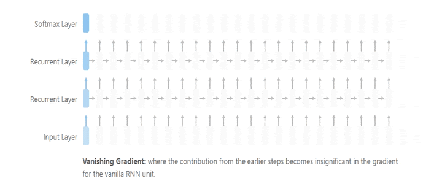
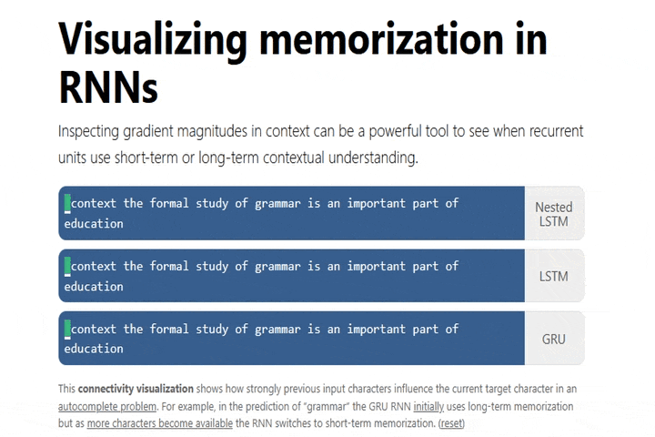
RNN моделите имат recurrent hidden state — това по същество е контейнер за съхранение на предишните думи в изречението. Това е ограничен, краен контейнер. Hidden state е основното ограничение в способността на RNN моделите да разбират дълги текстове.
Паралелните изчисления са невъзможни при RNN.
Работа с големи количества данни
RNN, подобно на CNN, не могат да разбират далечните връзки между големи обеми от данни. CNN могат да анализират само част от изображение, по същия начин RNN могат да анализират само няколко думи или изречения наведнъж. Transformer моделите могат да анализират целия текст наведнъж (стига да имат достатъчно голям контекстов прозорец).
Как Transformer моделите са по-добри?
- В Transformer моделите важността на думите се определя от контекста, а не от реда на думите.
- Transformer моделите нямат recurrent hidden state.
- Transformer моделите са проектирани за паралелни изчисления.
Self Attention
Какво е Self Attention?
Както беше споменато по-рано, Transformer моделите дължат своята универсалност на Multi-Head Self-Attention механизма.
Self-Attention е механизъм, който позволява на всяка позиция във входящата последователност да прецени значимостта на всички останали позиции в същата последователност (или „да насочи вниманието си към тях“), докато изчислява представянето на дадена последователност. (Raschka, 2024, p.55)
По-старият ИИ, базиран на RNN (рекурентни невронни мрежи), не е в състояние да разглежда връзките между всички входящи данни едновременно. По-новият ИИ, базиран на Transformer архитектурата, може да вижда връзките между всички входни данни едновременно и да определя тяхната степен на важност благодарение на Self-Attention механизма.
Пример: Ако поискате от един голям езиков модел (LLM) да ви даде петте най-важни факта от даден документ, по-старият ИИ, базиран на RNN, би трябвало да сканира целия документ и да съхрани междинни представяния на отделните данни в него, въз основа на които след това да даде отговор. По този начин може да се стигне до загуба на данни, в зависимост от това как ИИ формира тези представяния. По-новите езикови модели могат просто да „погледнат“ целия документ, без да се налага да го представят като нещо друго.
Как работи Self-Attention механизма?
Self-Attention използва един и същ принцип при работа с всички видове данни. В този пример ще разгледаме текстови данни, тъй като това е най-лесният начин този механизъм да бъде разбран концептуално.
Да кажем, че имаме изречението: Your journey starts with a single step (Твоето пътешествие започва с една-единствена стъпка)
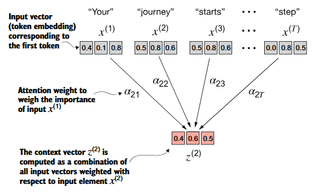
Целта на този опростен Self-Attention механизъм е следната: За всяка дума във входния текст се определя кои други думи в него са свързани контекстуално с нея.
Всяка дума от входния текст има свой собствен token embedding. Това е вектор, който съдържа стойности, представящи семантичното значение на думите.
Към всеки вектор за вграждане се прилага attention weight вектор. Първоначално числата в този вектор са случайни. Именно тях изкуственият интелект променя по време на своето обучение. Това са числата, които ИИ използва, за да определи важността на: значението на думата, нейната позиция в изречението, т.н.
Това е силно опростен single-head attention механизъм. Стандартните Self-Attention механизми обикновено са по-сложни и използват матрици за заявка (query), ключ (key) и тегло (weight), но основната идея е същата.
Multi-Head Attention
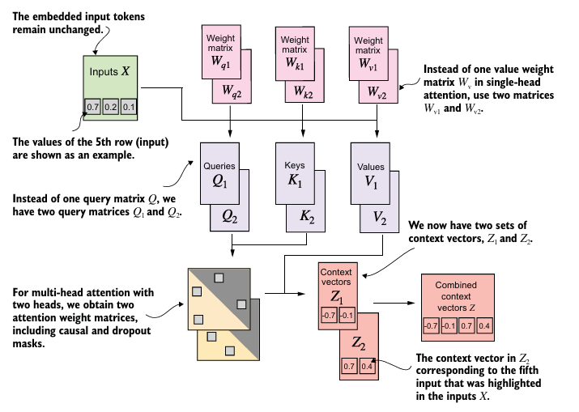
Съвременните големи езикови модели (LLM) използват multi-head attention механизми (механизми за внимание с много глави). Тези механизми се състоят от множество инстанции на механизми single-head attention, насложени един върху друг (Raschka, 2024, p.83). Фигурата по-долу показва multi-head attention механизъм, който се състои от множество механизми с една глава.
Интерактивна визуализация на Self-Attention механизъм
Защо Self-Attention механизмите са по-добри от рекурентните слоеве?
Благодарение на self-attention механизмите, Transformer моделите имат:
- По-ниска изчислителна сложност на слой в сравнение с RNN и CNN
- По-добър потенциал за паралелизация в сравнение с RNN и CNN
- Разбиране на далечни зависимости (long-range dependencies) между данните
- По-бързо обучение
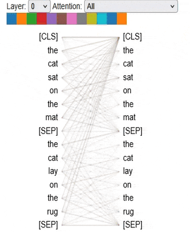
Feed-forward невронни мрежи
Feed-forward
Feed-forward невронните мрежи имат слоеста структура, като данните преминават последователно през всеки слой.
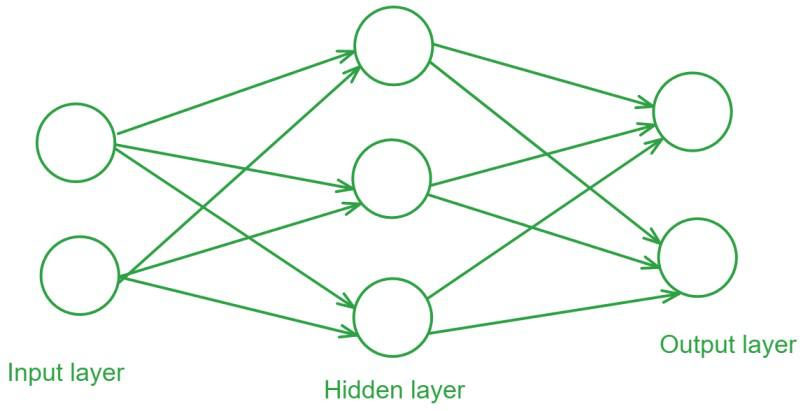
- Входен слой (Input Layer): Този слой се състои от неврони, които приемат входните данни. Всеки неврон представлява специфична характеристика на входните данни.
- Скрити слоеве (Hidden Layers): Един или повече скрити слоеве са разположени между входния и изходния слой. Тези слоеве откриват сложни зависимости в данните. Всеки неврон в даден скрит слой изчислява претеглената сума от своите входове, след което прилага нелинейна функция на активация.
- Изходен слой (Output Layer): Изходният слой генерира крайния резултат на мрежата. Броят на невроните в този слой съответства на броя на изходните класове при задача за класификация или на броя на стойностите при задача за регресия. (GeeksForGeeks, 2025)
Feed Forward Neural Network Interactive Showcase
Използване на Feed-forward при RNN
Feed-forward при рекурентните невронни мрежи (RNN) се реализира в рамките на рекурентността. Това означава, че част от изхода на feedforward слоя се използва повторно като вход. Това се прави, тъй като RNN не могат да разглеждат всички данни едновременно. (InfoDiagram, n.d.)
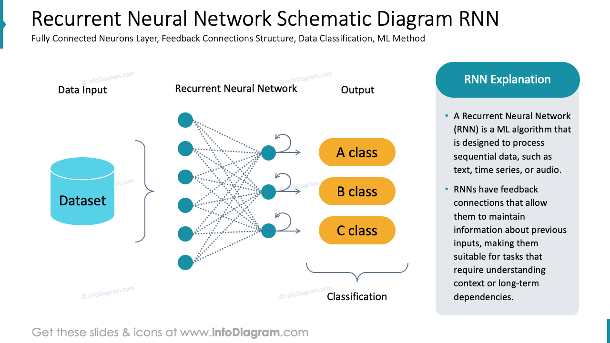
Използване на Feed-forward при Transformer моделите
Transformer моделите, от друга страна, използват feed-forward като напълно самостоятелен блок. Данните преминават линейно през този feed-forward блок.
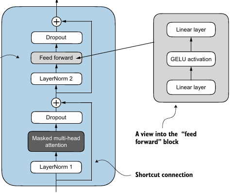
Как Transformer моделите промениха света на Изкуственият интелект
Преди появата на Transformer моделите потребителите трябваше да обучават невронни мрежи с големи, анотирани набори от данни, чието създаване беше скъпо и отнемаше много време. Чрез математическо откриване на закономерности между елементите, Transformer моделите елиминират нуждата от етикетиране на данните. Това позволява трилионите изображения и петабайтите текстови данни в интернет да бъдат използвани за обучение. (Merritt, 2022)
Transformer моделите са отлични в задачите за разпознаване на образи
Transformer моделите превъзхождат RNN в задачите за генериране на реч (text-to-speech)
Transformer моделите промениха компютърните технологии
Благодарение на тях сега имаме:
- По-добри чатботове и персонални асистенти, задвижвани от Transformer модели
- По-добри търсачки, които използват модели като BERT
- По-надежден машинен превод
- Генериране на изображения и звук
- Агенти за програмиране
- Ускорени научни изследвания чрез ИИ
- По-добри самоуправляващи се автомобили
Transformer моделите направиха възможно ИИ да разбира връзките в големи обеми от данни едновременно. Всичко споменато в този уебсайт показва, че тези модели
са истинска революция за Изкуствения интелект!
Относно уебсайта
Този уебсайт е създаден, за да демонстрира въздействието на Transformer моделите върху областта на Изкуствения интелект и реалният свят, да обясни накратко тяхното устройство и да сравни тези модели с други по-стари модели.
Уебсайтът е направен с HTML, CSS и JavaScript.
Съдържанието на уебсайта е написано от мен - Никола Димитров - около началото на 2026 г. Не е използван ИИ в нито един етап от писането на текстовото съдържание на този уебсайт. Скролнете надолу, за да видите всички източници на данни, които съм използвал за този проект.
В рамките на тази страница са вградени множество външни страници, които не са създадени от мен. Скролнете надолу, за да видите връзки към оригиналните страници.
Въпреки че обикновено не подкрепям прекомерната употреба на ИИ в софтуерни проекти, реших, че е уместно да използвам "vibe-coding" за дизайна на уебсайта (JS, CSS + HTML оформление), предвид темата. За целта използвах vibe-coding friendly IDE, наречено ZED, в комбинация с Gemini 2.5 Flash, 2.5 Pro и 3.0 Flash.
Източници на данни
Без следните източници, този уебсайт нямаше да съществува. Разгледайте ги!
Vaswani, A., Shazeer, N., Parmar, N., Uszkoreit, J., Jones, L., Gomez, A. N., Kaiser, L., & Polosukhin, I. (2017, 6 12).
Attention Is All You Need (7). Arxiv. Retrieved 11 04, 2026, from https://arxiv.org/abs/1706.03762
Основополагащата научна статия отговорна за създаване и популяризиране на Transformer моделите.
Agarap, A. F. M. (2019).
Comprehensive Review of Artificial Neural Network Applications to Pattern Recognition. IEEE Access, 7, 158820-158846. 10.1109/ACCESS.2019.2945545
GeeksForGeeks. (2025, July 26).
Structure of a Feedforward Neural Network. GeeksforGeeks. Retrieved April 12, 2026, from https://www.geeksforgeeks.org/deep-learning/feedforward-neural-network/
InfoDiagram. (n.d.). RNN Schematic DIagram. InfoDIagram.
Karita, S., Chen, N., & Hayashi, T. (2019).
A Comparative Study on Transformer vs RNN in Speech Applications. In arXiv. arXiv. Retrieved 4 13, 2026, from https://arxiv.org/pdf/1909.06317
Merritt, R. (2022, March 25).
What Is a Transformer Model? NVIDIA Blog. Retrieved April 13, 2026, from https://blogs.nvidia.com/blog/what-is-a-transformer-model/
Papastratis, I. (2023, 11 30). Comparison of Convolutional Neural Networks and Vision Transformers (ViTs). Medium. Retrieved 11 04, 2026, from https://medium.com/@iliaspapastratis/comparison-of-convolutional-neural-networks-and-vision-transformers-vits-a8fc5486c5be
Raschka, S. (2024).
Build a Large Language Model (From Scratch). Manning.
Старах се да не включвам книги тук, тъй като те не са безплатни, но според мен това е един от най-добрите ресурси за Transformer моделите.
Shchegrikovich, S. (2024, 1 28).
RNN vs Transformers or how scalability made possible Generative AI? Retrieved 4 11, 2026, from https://medium.com/@shchegrikovich/rnn-vs-transformers-or-how-scalability-made-possible-generative-ai-b7efce276392
Stryker, C., & Bergmann, D. (n.d.).
What is a Transformer Model? IBM. Retrieved April 11, 2026, from https://www.ibm.com/think/topics/transformer-model
Turc, J. (2025, 12 1).
Why are Transformers replacing CNNs? YouTube. Retrieved 11 4, 2026, from https://www.youtube.com/watch?v=KnCRTP11p5U
Обясненията в YouTube обикновено са твърде опростени, за да бъдат добри източници, но смятам, че това видео е много добро.
Източници на вграденото съдържание
Ето връзки към всички интерактивни примери, които съм вградил в този уебсайт.CNN Explainer
Transformer Architecture Visualiser
CNN 3D Layer Visualiser
RNN Visualiser
Interactive Self-Attention Mechanism Visualiser
TensorFlow Playground
Огромни благодарности към всички създатели на уеб страниците, вградени в този уебсайт!
Контакти
Можете да се свържете с мен на: NikolaDimitrov04@protonmail.com